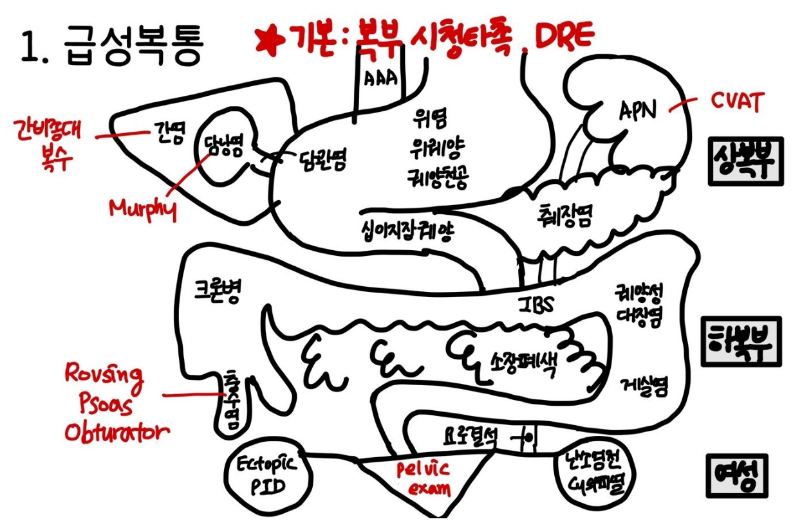
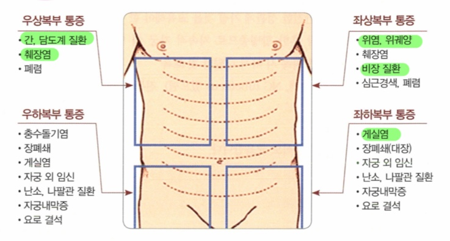
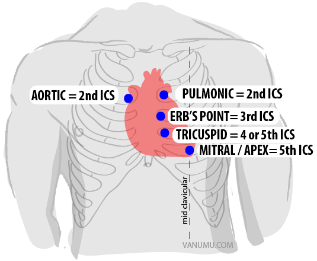

21. 급성복통
경우 산과적 질환도 감별 필요
|
| 의심질환 | 동반증상 |
상복부 | 위 | 위염 위궤양 십이지장궤양 | 명치 통증, 오심/구토, 흑색변(출혈 시), 식사 시 통증 변화(식후 – 위, 공복 – 십이지장) |
|
| 소화성 궤양 천공*응급 | 소화성 궤양 증상 갑자기 발생한 칼로 찌르는 듯한 극심한 통증, 판자처럼 딱딱한 복부 두근거림/어지러움 Td/RTd +/+ |
| 간담췌 | 급성 췌장염 | 복부-명치 사이 찌르는 듯한 통증, 등 뒤로 뚫고 나가는 듯한 방사통, 구부리거나/숙이면 완화, 식사 후 악화 오심/구토 |
|
| 급성 담낭염 담석증 담관염 | RUQ Td + Murphy + 지방식 후 악화 오심/구토, 황달, 발열 |
|
| 급성 간염 | 전신 쇠약/피로/근육통, 황달/짙은 소변, 복수, 간비대(오른쪽 윗배에 만져지는 덩어리) |
| 대동맥 | 복부 대동맥류 파열 | 찢어지는 듯한 통증, 등으로 뻗치는 통증 저혈압/호흡곤란/두근거림/어지러움 박동성 종괴 |
하복부 | 대장 (DRE 필요) | 급성 충수돌기염*응급 | 명치에서 RLQ 이동하는 통증 오심/구토, 식욕저하 Rovsing/Obturator/Psoas +/+/+ |
|
| 염증성 장질환(IBD) | 혈변, 만성 설사, 발열, 점막 궤양, 체중 감소 |
|
| 게실염/곁주머니염 | RLQ/LLQ 통증 발열 Td/RTd +/+ (localized RTd – localized peritonitis, General RTd – Panperitonitis) |
|
| 허혈성 대장염 | 고령, 고혈압/당뇨/부정맥 HTx + LLQ 통증, 쥐어짜는 듯한 통증 혈변/설사, 오심/구토, 복부팽만, 발열 Td + |
|
| 장간막 허혈 | 둔하고 쥐어짜는 듯한 통증 오심/구토, 소화불량 만성일 경우 식후 복통, 체중감소 가능 |
|
| 장간막동맥 폐색 | 배꼽 주위 통증, 쥐어짜는 듯한 통증 복부강직, Td/RTd +/+ 오심/구토, 설사/혈변, 복부팽만 |
|
| 장 폐색 | 배꼽 주위 통증, 쥐어짜는 듯한 통증 오심/구토, 방귀/대변 없음, 장음 항진 또는 소실, 복부팽만 개복 수술력 + |
| 비뇨 (CVAT 필요) | 요관 결석 | 옆구리 통증, 간헐적 CVAT + 배뇨통, 혈뇨 |
|
| 급성 신우신염 | 옆구리 통증 발열, 혈뇨 CVAT + |
|
| 방광염 | 치골 상부 Td 여성 빈뇨, 요절박, 배뇨통, 잔뇨 |
| 여성 (골반진찰 필요) | 자궁외임신*응급 | 젊은 여성, 무월경/생리 주기 변화, 임신 가능성 |
|
| 난소꼬임*응급 | 젊은 여성 악화/완화 반복하는 극심한 아랫배 통증 |
|
| 골반염증 | 발열, 질분비물 산부인과 수술력 + |


평가목표 1) 응급수술이 필요한 환자 감별 2) 원인에 따라 진단 및 치료 계획 설명 | ||||||||||||||||||||||||||||||||||||||||||||||||||||||||||||||||||||||||||||||||||||
응급수술 필요한 환자 감별 | 원인: - 장 천공, 급성 충수염, 급성 담낭염, 장 폐색, 혈관 파열 응급 수술 필요 설명: - 지금부터 금식 유지. 정확한 진단 위해 영상 검사 신속히 진행 후 응급 수술 진행. | |||||||||||||||||||||||||||||||||||||||||||||||||||||||||||||||||||||||||||||||||||
구체적인 성과 | ||||||||||||||||||||||||||||||||||||||||||||||||||||||||||||||||||||||||||||||||||||
병력 청취
| 복통의 양상 평가 | 기간: | ||||||||||||||||||||||||||||||||||||||||||||||||||||||||||||||||||||||||||||||||||
|
| 위치: - RUQ: 담낭염, 담관염, 췌장염, 간염, 폐렴/농흉, 흉막염, 횡격막 하 농양, Budd-Chiari synd - Epigastric: 식도염, 역류성 식도염, 위염, 위/십이지장 궤양, 췌장염, 심근경색, 심막염, 대동막류 파열 - LUQ: 비장염/농양/허혈/파열, 위염, 위궤양, 췌장염, 횡격막 하 농양 - RLQ: 충수돌기염, 막창자염, 곁주머니염, 염증성장질환, 산부인과질환(난관염, 자궁외임신, 골반염), 비뇨기과질환(신우신염, 요로결석) - Periumbilical: 초기 충수돌기염, 위장관염, 장 폐색, 대동맥류 파열, 장간막동맥 폐색 - LLQ: 곁주머니염, 염증성장질환, 과민대장증후군, 허혈성 대장염, 산부인과질환(난관염, 자궁외임신, 골반염), 비뇨기과질환(신우신염, 요로결석) - Whole: 기능성 복통, 위장관염, 장 폐색, 장간막 허혈, 과민대장증후군, 당뇨병성 위 마비, 복막염, 말라리아 | ||||||||||||||||||||||||||||||||||||||||||||||||||||||||||||||||||||||||||||||||||
|
| 양상: - 급작스러운 통증 > 장천공, 혈관 파열, 요로결석 - 급격히 악화되는 통증 > 급성 췌장염, 장폐색, 담관염 - 점진적으로 악화되는 통증 > 급성 충수염, 게실염, 골반염
- 쥐어짜는 듯한 통증 > 장폐색, 요로결석, 담석증 - 칼로 찌르거나 찢어지는 듯한 통증 > (장천공에 의한)복막염, 대동맥 박리 - 타는 듯한 통증 > 역류성 식도염, 위 궤양 - 은근한 명치 통증 > 소화성 궤양
- 명치 🡪 RLQ > 급성 충수염 - 우측 어깨 방사통 > 담낭염, 담석증 - 등 뒤 방사통 > 췌장염, 대동맥 박리 - 서혜부/생식기 방사통 > 요로결석 | ||||||||||||||||||||||||||||||||||||||||||||||||||||||||||||||||||||||||||||||||||
|
| 정도: - NRS: 0-10 - QoL: 일상생활 지장 정도 | ||||||||||||||||||||||||||||||||||||||||||||||||||||||||||||||||||||||||||||||||||
| 응급 수술이 필요한 상황을 시사하는 증상 또는 징후 확인 | Red flag signs: - 저혈압, 빈맥 - 고열, 오한 - 의식 변화 - 복막자극징후 : RTd +, 불수의적 방어, 복벽 강직, 타진통 - 장음 청진 변화 - 박동성 종괴 - 갑작스러운 발생 - 통증의 강도가 시간이 지나도 줄지 않음 - 고령에서의 첫 급성 복통 - 항암 치료 중이거나 면역 억제 상태 - 무월경 - 과거 복부 수술력 + 방귀 안나옴 - 혈변/흑색변 | ||||||||||||||||||||||||||||||||||||||||||||||||||||||||||||||||||||||||||||||||||
| 원인에 따른 동반 증상과 위험요인 평가 |
| ||||||||||||||||||||||||||||||||||||||||||||||||||||||||||||||||||||||||||||||||||
| 환자가 수치심을 느끼지 않도록 배려 | 복부 증상을 정확히 파악하기 위해서는 실례지만 배변 습관에 대해서도 몇 가지 여쭤봐야 합니다. 진료를 위해 꼭 필요한 질문이니 편하게 말씀해 주셔도 됩니다. 이런 증상은 장 건강을 체크할 때 가장 먼저 확인하는 아주 일반적인 지표입니다. | ||||||||||||||||||||||||||||||||||||||||||||||||||||||||||||||||||||||||||||||||||
신체 진찰 | 응급수술이 필요한 상황인지 감별하기 위한 신체진찰 | 기본 신체 진찰 | VS unstable: Hypotension, Tachycardia, Fever/Chill 의식 변화 | |||||||||||||||||||||||||||||||||||||||||||||||||||||||||||||||||||||||||||||||||
|
| 복부 진찰 | 복막자극징후 : RTd +, 불수의적 방어, 복벽 강직, 타진통 장음 청진 변화, 복부 팽만 박동성 종괴 | |||||||||||||||||||||||||||||||||||||||||||||||||||||||||||||||||||||||||||||||||
| 유발 원인을 감별하기 위한 복부진찰 | 기본 신체 진찰 | VS 확인 눈(빈혈, 황달) 입(탈수), 목(림프절), 피부(탈수) | |||||||||||||||||||||||||||||||||||||||||||||||||||||||||||||||||||||||||||||||||
|
| 복부 진찰 | 시 – 청 – 타 – 촉 간비대, 비장비대, 복수 | |||||||||||||||||||||||||||||||||||||||||||||||||||||||||||||||||||||||||||||||||
|
| 특이 검사 | 대장 병변 의심 > DRE 산부인과 질환 의심 > 골반 진찰 비뇨기과 질환 의심 > CVAT 충수돌기염 > McBurney/Psoas/Obturator/Rovsing 담낭염 > Murphy | |||||||||||||||||||||||||||||||||||||||||||||||||||||||||||||||||||||||||||||||||
| 환자가 수치심을 느끼지 않도록 배려 | 환자 수치스럽지 않게 (진찰 동의, 설명, 불필요한 곳 가려주기) | ||||||||||||||||||||||||||||||||||||||||||||||||||||||||||||||||||||||||||||||||||
진단 및 치료 | 원인에 따라 진단계획 수립 | 기본 검사 | 혈액검사 | 빈혈 소화 효소, 간 수치, 전해질 | ||||||||||||||||||||||||||||||||||||||||||||||||||||||||||||||||||||||||||||||||
|
|
| 영상검사 | X-Ray 식도, 위 > 위내시경 간담췌 > 복부 USG, 복부 CT 대장 > 대장내시경 | ||||||||||||||||||||||||||||||||||||||||||||||||||||||||||||||||||||||||||||||||
|
| 특이 검사 | 위 | 요소날숨검사/신속요소분해검사, 24시간 식도 pH 검사 | ||||||||||||||||||||||||||||||||||||||||||||||||||||||||||||||||||||||||||||||||
|
|
| 간 | 바이러스 항체검사 | ||||||||||||||||||||||||||||||||||||||||||||||||||||||||||||||||||||||||||||||||
|
|
| 대장 | 대변 잠혈 검사 | ||||||||||||||||||||||||||||||||||||||||||||||||||||||||||||||||||||||||||||||||
|
|
| 비뇨기과 | 소변검사 | ||||||||||||||||||||||||||||||||||||||||||||||||||||||||||||||||||||||||||||||||
|
|
| 산부인과 | 골반 USG | ||||||||||||||||||||||||||||||||||||||||||||||||||||||||||||||||||||||||||||||||
| 응급조치가 필요한 환자 감별 /응급치료가 필요한 환자를 감별하고 치료 계획 수립 | 소화성 궤양 천공, 복부 대동맥류 파열 > 개복 수술 필요 급성 충수돌기염, 자궁외 임신, 난소꼬임 > 복강경 수술 필요
지금부터 금식 유지. 정확한 진단 위해 영상 검사 신속히 진행 후 응급 수술 진행 소화성 궤양 천공 > 흉부 X-Ray, 옆 누움 흉부 X-Ray 급성 충수돌기염 > 복부 USG 자궁 외 임신, 난소 꼬임 > 골반 USG | ||||||||||||||||||||||||||||||||||||||||||||||||||||||||||||||||||||||||||||||||||
| 원인 질환의 치료 계획 수립 | 위염 위궤양 십이지장궤양 | 양성자펌프억제제 + 제산제 H.pylori 제균 치료(3제 : 양성자펌프억제제+Amoxicillin+Clarthromycin 4제 : 양성자펌프억제제+Bismuth+Metronidazole+Tetracycline) | |||||||||||||||||||||||||||||||||||||||||||||||||||||||||||||||||||||||||||||||||
|
| 소화성 궤양 천공*응급 | 응급 개복 수술 | |||||||||||||||||||||||||||||||||||||||||||||||||||||||||||||||||||||||||||||||||
|
| 급성 췌장염 | 금식 유지, 췌장효소보충, 혈당 조절, 진통제, 코위관 삽입 | |||||||||||||||||||||||||||||||||||||||||||||||||||||||||||||||||||||||||||||||||
|
| 급성 담낭염 담석증 담관염 | ERCP 및 담낭 절제술, 항생제 | |||||||||||||||||||||||||||||||||||||||||||||||||||||||||||||||||||||||||||||||||
|
| 급성 간염 | 항바이러스제, 보존적 치료(수액, 전해질 교정) | |||||||||||||||||||||||||||||||||||||||||||||||||||||||||||||||||||||||||||||||||
|
| 복부 대동맥류 파열 | 응급 수술 | |||||||||||||||||||||||||||||||||||||||||||||||||||||||||||||||||||||||||||||||||
|
| 급성 충수돌기염*응급 | 충수돌기절제술 | |||||||||||||||||||||||||||||||||||||||||||||||||||||||||||||||||||||||||||||||||
|
| 염증성 장질환(IBD) | 항염증제 5-ASA, Budesonide | |||||||||||||||||||||||||||||||||||||||||||||||||||||||||||||||||||||||||||||||||
|
| 게실염/곁주머니염 | 항생제 Ciprofoxacin, 3G Cepha + Metronidazole | |||||||||||||||||||||||||||||||||||||||||||||||||||||||||||||||||||||||||||||||||
|
| 허혈성 대장염 | 원인 제거 + 보존적 치료(수액, 전해질 교정) 괴사 의심 > 수술 | |||||||||||||||||||||||||||||||||||||||||||||||||||||||||||||||||||||||||||||||||
|
| 장간막 허혈 | 항혈소판제, HTN/DM/이상지질혈증 치료 심할 경우 endovascular stenting, surgical thrombectomy | |||||||||||||||||||||||||||||||||||||||||||||||||||||||||||||||||||||||||||||||||
|
| 장간막 동맥 폐색 | 혈전색전제거술, 이미 괴사한 장 수술적 제거 항응고제, 광범위 항생제 | |||||||||||||||||||||||||||||||||||||||||||||||||||||||||||||||||||||||||||||||||
|
| 장 폐색 | 수액 공급, 비위관 삽입 | |||||||||||||||||||||||||||||||||||||||||||||||||||||||||||||||||||||||||||||||||
|
| 요관 결석 | 수액치료. 진통제, USG 쇄석술 | |||||||||||||||||||||||||||||||||||||||||||||||||||||||||||||||||||||||||||||||||
|
| 급성 신우신염 | 항생제 Ceftriaxone | |||||||||||||||||||||||||||||||||||||||||||||||||||||||||||||||||||||||||||||||||
|
| 방광염 | 항생제 Fosfomycin | |||||||||||||||||||||||||||||||||||||||||||||||||||||||||||||||||||||||||||||||||
|
| 자궁외임신*응급 | MTX, VS unstable 🡪 응급 수술 | |||||||||||||||||||||||||||||||||||||||||||||||||||||||||||||||||||||||||||||||||
|
| 난소꼬임*응급 | 꼬임 풀기 및 낭종 절제술 | |||||||||||||||||||||||||||||||||||||||||||||||||||||||||||||||||||||||||||||||||
|
| 골반염증 | 항생제 Ceftriaxone | |||||||||||||||||||||||||||||||||||||||||||||||||||||||||||||||||||||||||||||||||
환자 교육 | 응급수술이 필요한 환자에게 수술의 필요성 설명 | 생활습관 개선 | 식사 규칙적으로 먹기, 맵고 자극적인 음식 피하기, 야식 피하기 과일과 채소 등 지방은 적고 섬유질이 많은 음식 많이 먹기 금연 금주 커피/탄산음료 줄이기 음식 충분히 씹어 삼키기, 과식하지 않기 적절한 유산소 운동과 체중 조절 당뇨 조절 적당한 휴식/수면, 스트레스 관리 진통제 등 약물 사용 전 의사와 상담 (과민대장증후군에서 고식이섬유 식사 강조) | |||||||||||||||||||||||||||||||||||||||||||||||||||||||||||||||||||||||||||||||||
|
| 추가적 검사 설명 | 음식 심키기 어려움/어지러움/객혈/혈변/흑색변 즉시 내원 필요 내시경을 할 경우 금식이 필요할 수 있음 | |||||||||||||||||||||||||||||||||||||||||||||||||||||||||||||||||||||||||||||||||
| 응급처치나 수술이 필요한 경우 환자의 불안감을 최소화 할 수 있도록 설명 | 급성 충수돌기염 > 수술을 받을 경우 대부분 후유증 없이 완치됨 | ||||||||||||||||||||||||||||||||||||||||||||||||||||||||||||||||||||||||||||||||||
질환 | 질환 설명 | 병력청취 | 신체진찰 | 검사 | 치료 |
위염 위궤양 십이지장궤양 | 위 점막에 염증 궤양-헐어서 깊게패임 십이지장: 위 바로 밑 장 | 명치 통증, 오심/구토, 흑색변(출혈 시), 식사 시 통증 변화(식후 – 위, 공복 – 십이지장) | 위내시경 요소날숨검사/신속요소분해검사, 24시간 식도 pH 검사 | 양성자펌프억제제 + 제산제 H.pylori 제균 치료(3제 : 양성자펌프억제제+Amoxicillin+Clarthromycin 4제 : 양성자펌프억제제+Bismuth+Metronidazole+Tetracycline) | |
소화성 궤양 천공*응급 | 위나 장에 구멍남 음식물/공기 배안으로 새는중 | 소화성 궤양 증상 갑자기 발생한 칼로 찌르는 듯한 극심한 통증, 판자처럼 딱딱한 복부 두근거림/어지러움 Td/RTd +/+ | 흉부 X-Ray, 옆 누움 흉부 X-Ray, 복부 CT | 응급 개복 수술 | |
급성 췌장염 | 췌장=이자 갑작스러운 염증->심한 복통 | 복부-명치 사이 찌르는 듯한 통증, 등 뒤로 뚫고 나가는 듯한 방사통, 구부리거나/숙이면 완화, 식사 후 악화 오심/구토 | 복부 CT | 금식 유지, 췌장효소보충, 혈당 조절, 진통제, 코위관 삽입 | |
급성 담낭염 담석증 담관염 | 담즙-간에서 만든 소화액 담낭-담아두는 주머니 담관-내려오는길, 돌낌/염증 | RUQ Td + Murphy + 지방식 후 악화 오심/구토, 황달, 발열 | 복부 USG, 복부 CT | ERCP 및 담낭 절제술, 항생제 | |
급성 간염 | 간에 급성 염증
| 전신 쇠약/피로/근육통, 황달/짙은 소변, 복수, 간비대(오른쪽 윗배에 만져지는 덩어리) | 복부 CT | 항바이러스제, 보존적 치료(수액, 전해질 교정) | |
복부 대동맥류 파열 | 배 속 큰 혈관이 터짐 | 찢어지는 듯한 통증, 등으로 뻗치는 통증 저혈압/호흡곤란/두근거림/어지러움 박동성 종괴 | 복부 CT | 응급 개복 수술 | |
급성 충수돌기염*응급 | 충수(맹장)에 염증 | 명치에서 RLQ 이동하는 통증 오심/구토, 식욕저하 Rovsing/Obturator/Psoas +/+/+ | 복부 USG, 복부 CT | 충수돌기절제술, 항생제 | |
염증성 장질환(IBD) | 면역 세포가 자신의 장 점막을 적으로 착각하고 계속 공격하여 염증을 일으키는 것 | 혈변, 만성 설사, 발열, 점막 궤양, 체중 감소 | 대장내시경, 대변 검사, 조직검사 | 항염증제 Budesonide, Steroid | |
게실염/곁주머니염 | 대장 벽 옆 주머니 같은 게실에서 염증 심해지면 구멍이 터질 수 있음 | RLQ/LLQ 통증 발열 Td/RTd +/+ (localized RTd – localized peritonitis, General RTd – Panperitonitis) | 복부 CT *대장 내시경, 대장 조영술 금기 | 항생제 Ciprofloxacin, 3G Cepha + Metronidazole | |
허혈성 대장염 | 대장으로 가는 혈관 일시적으로 좁아짐 🡪 피가 덜 가서 근육이 뭉치고 아픈 것이랑 같은 개념 | 고령, 고혈압/당뇨/부정맥 HTx + LLQ 통증, 쥐어짜는 듯한 통증 혈변/설사, 오심/구토, 복부팽만, 발열 Td + | 복부 CT, 대장내시경 | 원인 제거 + 보존적 치료(수액, 전해질 교정) 괴사 의심 > 수술 | |
장간막 허혈 | 장 전체에 피를 공급하는 혈관에 문제가 생겨 혈류가 줄어듦 | 둔하고 쥐어짜는 듯한 통증 오심/구토, 소화불량 만성일 경우 식후 복통, 체중감소 가능 | 복부 CT, 복부 Duplex USG, CT 혈관 조영술 | 항혈소판제, HTN/DM/이상지질혈증 치료 심할 경우 endovascular stenting, surgical thrombectomy | |
장간막 동맥 폐색 | 장으로 가는 가장 큰 동맥에 피떡이 막음 | 배꼽 주위 통증, 쥐어짜는 듯한 통증 복부강직, Td/RTd +/+ 오심/구토, 설사/혈변, 복부팽만 | 복부 CT, 복부 Duplex USG, CT 혈관 조영술, ECG/심초음파 | 혈전색전제거술, 이미 괴사한 장 수술적 제거 항응고제, 광범위 항생제 | |
장 폐색 | 장 막힘 🡪 음식물,가스 통과X | 배꼽 주위 통증, 쥐어짜는 듯한 통증 오심/구토, 방귀/대변 없음, 장음 항진 또는 소실, 복부팽만 개복 수술력 + | 복부 CT | 수액 공급, 비위관 삽입 | |
요관 결석 | 소변 내려오는길 에 돌이 낌 (콩팥-> 방광) | 옆구리 통증, 간헐적 CVAT + 배뇨통, 혈뇨 | 콩팥요관방광 단순촬영, 골반 CT, 소변검사 | 수액치료. 진통제, USG 쇄석술 | |
급성 신우신염 | 신장에 세균 감염 | 옆구리 통증 발열, 혈뇨 CVAT + | 복부 CT, 소변 배양 ra사 | 항생제 Ceftriaxone/Ciprofloxacin | |
방광염 | 세균이 방광에 들어와 염증 발생 | 치골 상부 Td 여성 빈뇨, 요절박, 배뇨통, 잔뇨 | 소변 배양 검사 | 항생제 Fosfomycin | |
자궁외임신*응급 | 임신이 자궁 밖에서 | 젊은 여성, 무월경/생리 주기 변화, 임신 가능성 | 골반 USG, 소변 임신 검사 | MTX, VS unstable 🡪 응급 수술 | |
난소꼬임*응급 | 난소-난자 저장하고 배란 자궁 양옆 위치 | 젊은 여성 악화/완화 반복하는 극심한 아랫배 통증 | 골반 USG | 꼬임 풀기 및 낭종 절제술 | |
골반염증 | 골반 내 장기(자궁/난소) 세균 | 발열, 질분비물 산부인과 수술력 + | 골반 USG | 항생제 Ceftriaxone | |
자기소개/환자확인/환자동의/활력징후 “진료 대기 시간이 길었는데 오래 기다리시느라 고생 많으셨습니다./몸도 좋지 않은데 병원까지 오셔서 기다리시느라 고생이 많으셨습니다.” “복부 증상을 정확히 파악하기 위해서는 실례지만 배변 습관에 대해서도 몇 가지 여쭤봐야 합니다. 진료를 위해 꼭 필요한 질문이니 편하게 말씀해 주시면 많은 도움이 될 것입니다.” | ||
O | 언제부터 갑자기/서서히 하루 중 언제/상황 | |
L | 어디가 아픈지/”아픈데 손으로 짚어보세요.” 다른 곳으로 이동하는지/뻗치는지 | |
D | 지속/있다없다 얼마나 자주 | |
Co | 악화 | |
Ex | 이전에도? 🡪 치료, PPI(제산제) | |
C | 개방형: “어떻게 아픈지 자세히 설명해주시겠어요?” 양상: 쥐어짜는듯/타는듯/베이듯/칼로 찌르는듯 얼마나 심한지: NRS, QoL 🡪 “많이 힘드셨겠습니다.” | |
A | 개방형: “다른 불편한 곳은 없으세요? 네. 그럼 제가 몇가지 자세하게 확인해보겠습니다.” | |
| 전신 | F/C/Fatigue/WL/피로/부종 |
| 소화기 | 식욕저하/구역/구토 “대변, 소변은 좀 어떠세요? 색/양/횟수/특이사항?” 🡪 변비(방귀?)/설사/토혈/혈변/흑색변/지방변 복부팽만/복부종괴/황달 🡪 황달 있는 경우 가려움/복수/소변대변 색변화 |
| 순환기/호흡기 | 가슴통증/호흡곤란/기침 |
| 부인과 | 질출혈/질분비물 🡪 양/색/냄새 변화 |
| 비뇨기 | 배뇨통/소변색 변화/혈뇨/빈뇨 |
F | 개방형: “증상이 어떨 때 좀 괜찮아지고/심해지나요?” | |
| 식사 | 전 > 십이지장 궤양 후 > 위염, 위 궤양 음주 > 위염, 위 궤양, 췌장염 기름진 식사 > 담도계, 췌장염 |
| 자세 | 앞으로 숙이면 완화 > 췌장염 누우면 악화 > 위식도역류질환 |
| 배뇨/배변 | 배뇨/배변 등에 의해 통증 완화/악화? |
E | 건강검진, 위내시경/대장내시경 담석/요로결석 예방접종: 간염 | |
요약 및 PPI | “지금까지 말씀하신 것을 요약하자면 ~.” “제가 질문을 많이 했는데 잘 대답해주셔서 감사합니다. 몇가지만 더 여쭙도록 하겠습니다.” | |
외 | 수술/외상/입원 | |
과 | HTN/DM/고지혈증/결핵/간 | |
약 | 약물/영양제/한약 소염진통제, 제산제, 항생제 > 궤양 고혈압 약 복용 제대로? ? 복부 대동맥류 파열 | |
사 | 술/담배/커피/직업/스트레스 식습관: 규칙적/기름지고 자극적인 음식/최근 드신 음식 중 원인이 될 만한 것(해산물, 안 먹던 음식) 운동: 규칙적/일주일 횟수 | |
가 | 소화기 암/질환 | |
여 | 월경력: 마지막 생리 시작일 🡪 기간/주기/규칙성/양/월경통 산과력: 임신가능성/피임(자궁내장치)/결혼/아이/출산(자분/제왕/출산시 출혈)/유산(수술/자연유산)/수유 | |
요약 및 PPI | “네. 이로써 문진은 마치도록 하겠습니다.” “혹시 더 말씀해주시고 싶은 것 있으실까요? 편하게 말씀해주세요.” | |
환자동의 “정확히 어디가 아픈지 확인하기 위해 신체진찰을 진행해야 합니다. 과정 중에 신체 노출과 접촉이 있을 수 있으나, 불편하시지 않게 필요한 부분만 노출하고 최대한 신속히 확인하겠습니다. 괜찮으실까요? 중간중간 불편하시면 언제든 말씀해주세요.” | |
기본 신체진찰 | |
VS 확인 | |
눈 | 빈혈/황달 |
입 | 탈수 |
목 | 림프절 |
피부 | 긴장도/오목부종/맥박 |
순환기/호흡기 의심 시 심장 청진 폐 청진 시행 “윗배가 아프신 분들 중 사실은 가슴이 아픈데 배가 아픈 것 처럼 느낄 수 있습니다.” | |
심음 청진 |  |
호흡기 진찰 | 청진 맨 마지막 앉아서 후면만 진행 : 손 앞가슴 X자, 살짝 앞으로 기대기 |
얼굴 | 부비동 압통 확인하기 비경 있으면 비경 콧구멍에 넣고 빛 비춰보기 맥박잰다고 하고 호흡수 15초 측정(16회라고 뻥쳐) 청색증/곤봉지 확인 |
시진 | 옷 올려보기 눈으로 보고 숨깊게 쉬어보세요 + 기침도 해보세요 (앞뒤 다 확인) |
촉진 | 등 뒤만 양 손등 대고 아 해보세요 4번 엄지 모아지게 흉곽 감싸 안고 조이기 -> 숨 쉬어보세요 : 흉곽 벌어짐/대칭 |
타진 | ㄹ자로 8군데+ 아래는 양 옆구리쪽으로 2번 벌어지면서도 하기 |
청진 | 청진기 차가워요+데우기 ㄹ자로 듣기(8번+아래옆구리2번) |
복부 진찰 "많이 긴장되시죠? 숨을 크게 들이마시고 편안하게 내뱉으시면 검사가 훨씬 수월해집니다. 잘하고 계십니다." 많이 아파할 경우 🡪 “자세히 보고 정확히 진찰하려다보니 신체 검진 과정에서 불편을 드린 것 같습니다.” | |
시 | 자세 누워서 무릎 굽힘, “명치부터 골반까지 노출하고 다른 부위는 가려드리겠습니다.” “아픈 곳 손으로 짚어보세요.” 외상/수술 흔적/팽만 |
청 | “청진기 손으로 데우긴 하는데 차가울 수 있습니다. 불편하면 말씀해주세요.” 배 4군데(3초)+명치 |
타 | 4군데 이상, 아픈 곳 마지막으로 |
| 간: 세로로 Rt. Mid 쇄골 라인 따라 🡪 유두부터 배꼽 아래까지 일직선 두드리기 |
| 복수: 가로로 배 가운데 가로로 쭉 두드리기 🡪 왼쪽으로 벽보고 돌아서 누워 배 아래쪽 누워있는 부분 두드리기 |
촉 | 4군데 이상 얕게/깊게, 아픈 곳 마지막으로 압통 호소 🡪 반동압통도 시행 |
| 간: 왼손으로 받치고 오른손으로 아래에서 위쪽, 깊은 숨 쉬게하곤 촉진 |
| 비장: 오른손으로 받치고 왼손으로 촉진 |
특이 검사 | 담낭/충수돌기염:
비뇨: - CVAT (+) |
DRE | |
안내 | “항문괄약근과 직장 내 병변이 있는지 확인하는 검사입니다. 항문에 손가락 넣어서 만져보는 검사 불편하실 수 있지만 진단을 위해 필요한 과정입니다. 괜찮으실까요?” |
자세 | 등지고 누워+왼다리는 그냥 피고+오른다리는 가슴에 붙도록 90도 구부리고 새우등 자세+엉덩이는 최대한 뒤로 빼서 새우등자세 |
PPI | “옷 내려주시고, 불필요한 부분은 가려드리겠습니다. 안보여서 불안하겠지만 모든 과정 말로 설명하고 진행할테니 걱정 안하셔도 됩니다.” |
시진 | 항문 주변 덩이 샛길 궤양 염증 없음 변보듯 힘주기 |
촉진 | 항문 주변 덩이/압통 |
손가락 | “손가락 넣겠습니다. 젤 차갑고 불편하세요.” 🡪 변 참을 때처럼 힘 주고 힘 빼기 “빼겠습니다. 끝났습니다. 고생 많으셨고 닦으실 수 있도록 여분 휴지 챙겨드리겠습니다.” |
보고 | 변색성상+ 병변: 항문직장선 기준 *cm상방+*cm크기+*시 방향 둥근모양+매끄럽/울퉁불퉁경계+고정/유동+압통 |
마무리 | “신체진찰 끝났습니다. 정리하시고 다시 돌아와주시면 됩니다. 협조해주셔서 감사합니다.” |
골반진찰 | |
안내 | “질 안쪽 손가락을 넣어서 자궁 및 부속기의 운동성/압통/종괴 유무 확인하는 검사입니다. 불편하실 수 있지만 진단을 위해 필요한 과정입니다. 괜찮으실까요?” 생리중/이전 성경험? 검사 이전 24시간 내: 질정/질세척/성관계/탐폰? 검사 이후 48시간 이후 : 질정/질세척/성관계/탐폰? |
자세 | 옷 갈아입고 침대 누움 + 다리 M자 + 발은 발판 불필요한 부분은 가려드리겠습니다 |
골반 내진 | “외음부에 손이 닿을건데 너무 놀라지 마세요.” 시진: “먼저 한번 보겠습니다. 발적/궤양 확인하겠습니다.” “손가락을 질 안으로 넣겠습니다. 놀라지 마세요.” “자궁경부 운동성/압통/종괴 확인하겠습니다.” “누를 때 아픈가요?” “손가락 천천히 빼겠습니다. 놀라지마세요. 묻어 나온 질분비물 확인하겠습니다.” |

진단검사 | ||
기본 검사 | 혈액검사 | 빈혈 소화 효소, 간 수치, 전해질 |
| 영상검사 | X-Ray 식도, 위 > 위내시경 간담췌 > 복부 USG, 복부 CT 대장 > 대장내시경 |
특이 검사 | 위 | 요소날숨검사/신속요소분해검사, 24시간 식도 pH 검사 |
| 간 | 바이러스 항체검사 |
| 대장 | 대변 잠혈 검사 |
| 비뇨기과 | 소변검사 |
| 산부인과 | 골반 USG |
치료 | 위염 위궤양 십이지장궤양 | 양성자펌프억제제 + 제산제 H.pylori 제균 치료(3제 : 양성자펌프억제제+Amoxicillin+Clarthromycin 4제 : 양성자펌프억제제+Bismuth+Metronidazole+Tetracycline) |
| 소화성 궤양 천공*응급 | 응급 개복 수술 |
| 급성 췌장염 | 금식 유지, 췌장효소보충, 혈당 조절, 진통제, 코위관 삽입 |
| 급성 담낭염 담석증 담관염 | ERCP 및 담낭 절제술, 항생제 |
| 급성 간염 | 항바이러스제, 보존적 치료(수액, 전해질 교정) |
| 복부 대동맥류 파열 | 응급 수술 |
| 급성 충수돌기염*응급 | 충수돌기절제술 |
| 염증성 장질환(IBD) | 항염증제 5-ASA, Budesonide |
| 게실염/곁주머니염 | 항생제 Ciprofoxacin, 3G Cepha + Metronidazole |
| 허혈성 대장염 | 원인 제거 + 보존적 치료(수액, 전해질 교정) 괴사 의심 > 수술 |
| 장간막 허혈 | 항혈소판제, HTN/DM/이상지질혈증 치료 심할 경우 endovascular stenting, surgical thrombectomy |
| 장간막 동맥 폐색 | 혈전색전제거술, 이미 괴사한 장 수술적 제거 항응고제, 광범위 항생제 |
| 장 폐색 | 수액 공급, 비위관 삽입 |
| 요관 결석 | 수액치료. 진통제, USG 쇄석술 |
| 급성 신우신염 | 항생제 Ceftriaxone |
| 방광염 | 항생제 Fosfomycin |
| 자궁외임신*응급 | MTX, VS unstable 🡪 응급 수술 |
| 난소꼬임*응급 | 꼬임 풀기 및 낭종 절제술 |
| 골반염증 | 항생제 Ceftriaxone |
| 생활습관 개선 | 생활습관 교정 (안심/회피,교정/검진접종/응급) 식사 규칙적으로 먹기, 맵고 자극적인 음식 피하기 금연 금주 커피줄이기 적절한 유산소 운동과 체중 조절 당뇨 조절 적당한 휴식/수면, 스트레스 관리 |
| 추가적 검사 설명 | 음식 심키기 어려움/어지러움/객혈/혈변/흑색변 즉시 내원 필요
지금부터 금식 유지. 정확한 진단 위해 영상 검사 신속히 진행 후 응급 수술 진행 - 소화성 궤양 천공, 복부 대동맥류 파열 > 개복 수술 필요 - 급성 충수돌기염, 자궁외 임신, 난소꼬임 > 복강경 수술 필요 [국가암검진] 대장암은 만 50세 이상 남녀 대상 매년 분변 잠혈검사를 시행 (이상 시 대장내시경 검사) |
[도입] 갑자기 배가 아파서 많이 놀라셨을 것 같습니다.
[진단] 지금 ○○○님께 가장 의심되는 진단명은 '-'입니다. -는 ~한 질병입니다.
[감별] 하지만 다른 -이나, -이 있어도 이러한 증상이 나타날 수 있습니다.
[진단] 따라서 정확한 진단을 위해, 우선 기본적인 혈액검사로 소화효소, 간수치, 전해질, 빈혈 같은 전체적인 상태를 확인해볼 것이고, 영상검사로 위내시경/ USG/복부CT/대장내시경을 시행해 확인해봐야 합니다. 내시경 검사를 진행할 경우 지금부터 금식을 하셔야 합니다.
[치료] -으로 진단될 경우 치료는 ~.
*소화성 궤양 천공, 복부 대동맥류 파열, 급성 충수돌기염, 자궁외 임신, 난소 꼬임일 경우 🡪 지금부터 금식 유지하시면서 영상 검사 진행 후 바로 신속하게 응급 수술 진행할 예정입니다.
[교육] 배가 더 아프거나 다른 새로운 증상이 발생할 경우 언제든지 내원하세요. 그리고 생활 속에서 맵거나 자극적인 음식들은 피해주시고, 적절하게 운동을 해 주시고 금연과 금주를 해주신다면 증상 완화에 더 도움이 되실 것입니다
[질문] 궁금한 점이 있으시다면 편하게 물어보세요. 없으시다면, 이것으로 진료를 마치겠습니다. 수고 많으셨습
니다.